Datos y variables
Usamos el World Development Indicators (WDI) del Banco Mundial, la base de datos de desarrollo más comprehensiva del mundo, con datos para más de 217 países entre 1990 y 2024. Para el análisis se seleccionaron dos cortes temporales:
| Corte | Año | Justificación |
|---|---|---|
| Moderno | 2023 | Año estable post-COVID. Todos los indicadores superan 78 % de cobertura. 2021 y 2022 fueron descartados por distorsiones post-pandemia e inflación. |
| Temprano | 2005 | Año más antiguo desde 2000 donde todas las variables seleccionadas superan el umbral de cobertura del 75 %. Permite una ventana de 18 años. |
Variables seleccionadas (14)
Se descartaron tres variables candidatas: Índice de Gini (datos esporádicos, 26-40 % de cobertura), Gasto en educación (cobertura baja e inconsistente) e INB PPA (redundante con el PBI per cápita, r ≈ 0,98).
| Dimensión | Variables |
|---|---|
| Ingreso y crecimiento | PBI per cápita (US$ constantes 2015), Crecimiento anual del PBI |
| Precios y empleo | Inflación al consumidor, Desempleo |
| Estructura económica | Formación bruta de capital, Exportaciones, Importaciones, Agricultura, Industria, Servicios — todos como % del PBI |
| Desarrollo humano | Urbanización (% población), Esperanza de vida, Acceso a Internet |
| Medioambiente | Emisiones de CO₂ per cápita (toneladas, excl. LULUCF) |
Análisis exploratorio
Transformaciones de variables
PCA y k-means son sensibles a distribuciones muy asimétricas: variables con colas largas distorsionan las distancias y pueden dominar artificialmente los ejes. Antes de modelar, cada variable fue transformada individualmente según su asimetría observada:
| Transformación | Variables | Razón |
|---|---|---|
| Logaritmo natural | PBI per cápita | Datos en múltiples órdenes de magnitud (US$250 a 111.000); asimetría 2,2 → ≈ 0 |
| log(1 + x) | Emisiones CO₂ | Variable positiva con valores cercanos a cero; asimetría 5,4 → 0,5 |
| Yeo-Johnson | Inflación, Desempleo, Exportaciones, Importaciones, Agricultura, Industria | Admite valores negativos (inflación); el parámetro λ se estima de los datos |
| Sin transformar | Crecimiento PBI, Cap. Fijo, Servicios, Urbanización, Esp. vida, Internet | Asimetría baja o distribución acotada naturalmente |
StandardScaler. Esto garantiza que ninguna variable domine por su escala.
Se prefirió StandardScaler sobre RobustScaler porque este último,
al dividir por el rango intercuartílico, amplifica outliers extremos (como el crecimiento
del PBI de Macao en 2023, +75 %) hasta distorsionar el análisis completo.
Correlaciones entre variables
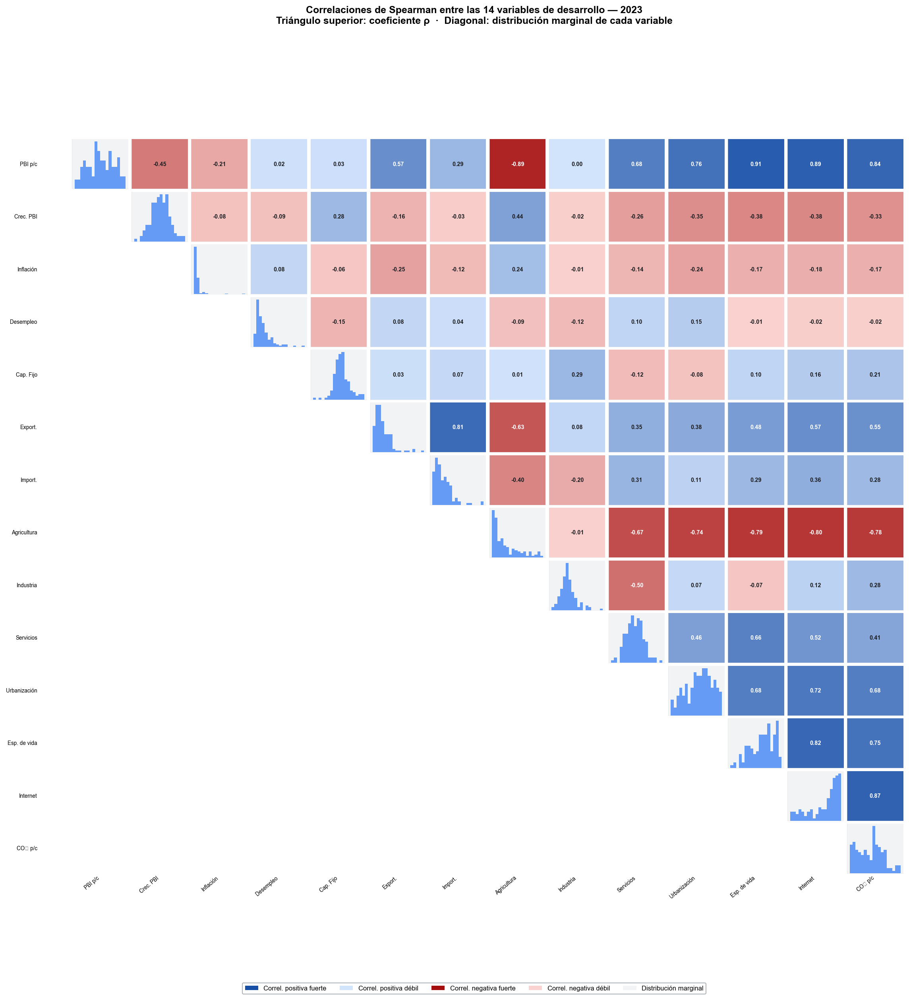
Qué observar: hay un bloque azul fuerte entre PBI per cápita, Internet, Esperanza de vida, Urbanización y CO₂ — todas miden facetas del mismo fenómeno subyacente: el nivel de desarrollo. La agricultura correlaciona negativamente con todas ellas. Esta estructura es exactamente lo que capturará PC1.
Análisis de Componentes Principales (PCA)
El PCA transforma las 14 variables correlacionadas en un conjunto de ejes ortogonales (componentes principales) ordenados de mayor a menor varianza explicada. Esto permite visualizar la estructura global de los datos en pocas dimensiones.
¿Cuántos componentes retener?
Se aplicó el Análisis Paralelo de Horn: se generan 1.000 matrices de datos aleatorios del mismo tamaño y se retienen solo los componentes cuyos autovalores superan el percentil 95 del ruido puro. Es el criterio más riguroso y evita tanto la sub- como la sobreestimación (el criterio de Kaiser, autovalor > 1, tiende a sobreestimar).
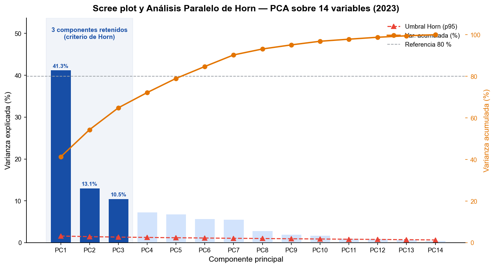
¿Qué mide cada componente?
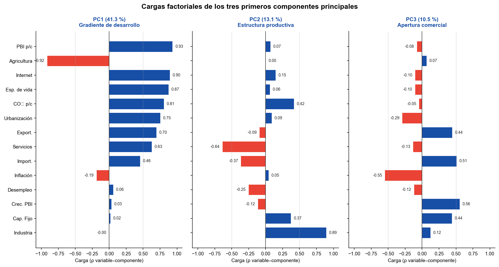
PC1 (41 %): agrupa Internet, Esperanza de vida, PBI per cápita, CO₂ y Urbanización (positivos) contra Agricultura (negativo). Es el eje del desarrollo: cuanto más a la derecha del biplot, más «desarrollado» en este sentido integral.
PC2 (13 %): opone países industrializados (Industria +, Capital +) a los orientados a servicios.
PC3 (10 %): diferencia economías abiertas al comercio internacional.
Círculo de correlaciones
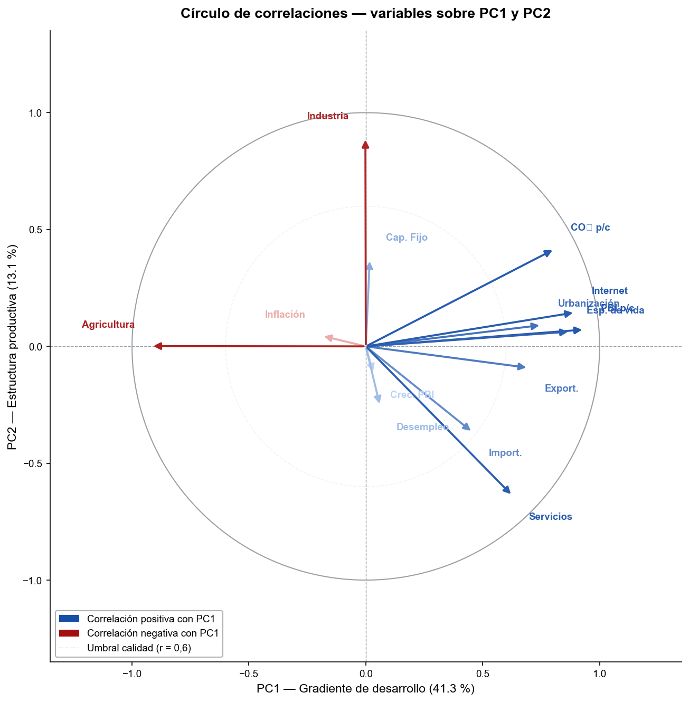
Qué observar: Internet, Esperanza de vida, PBI per cápita y Urbanización apuntan a la derecha — son las variables que definen el polo «desarrollado» en PC1. Agricultura apunta a la izquierda — polo opuesto. Industria apunta hacia arriba, dominando PC2. Variables cortas (Inflación, Crecimiento PBI) están mal representadas por estos dos ejes y requieren PC3 para ser interpretadas.
Clustering de países
¿Cuántos grupos?
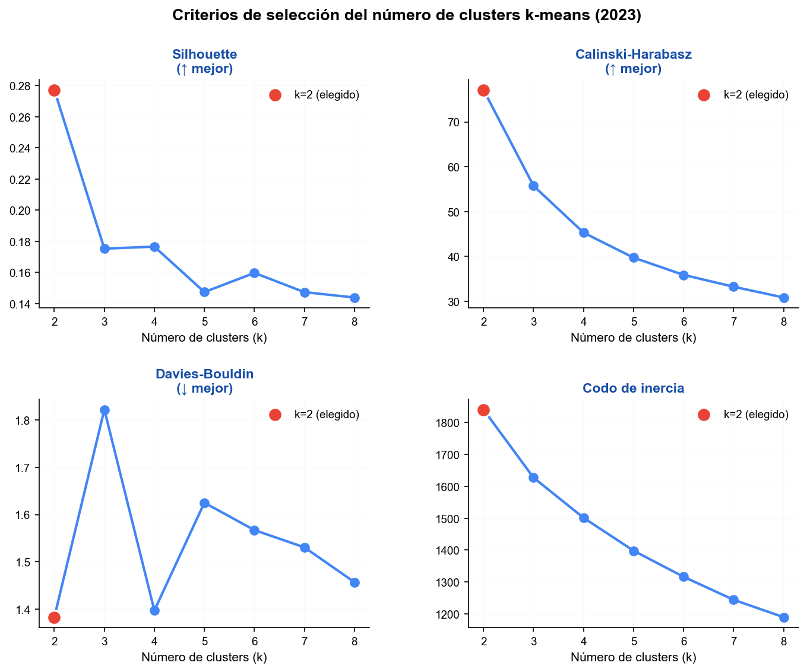
Adicionalmente: el Gap Statistic (no mostrado) también señala k = 2. La estabilidad bootstrap (criterio de Hennig, Jaccard > 0,75 = estable) confirma: k = 2 obtiene 0,96 y 0,94 por cluster; k = 4 colapsa (mín. 0,27).
Resultado principal: dos grupos
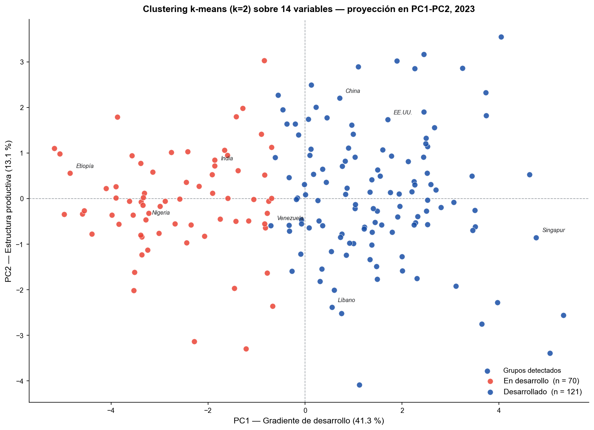
Grupo rojo — En desarrollo (n ≈ 99): bajo PBI per cápita, menor esperanza de vida, baja cobertura de Internet y alta participación agrícola. Incluye la mayor parte de África Subsahariana, Asia del Sur y partes de América Latina.
Grupo azul — Desarrollado (n ≈ 92): economías de alta productividad, larga esperanza de vida, acceso masivo a Internet y economías orientadas a servicios.
Vista complementaria: tres grupos
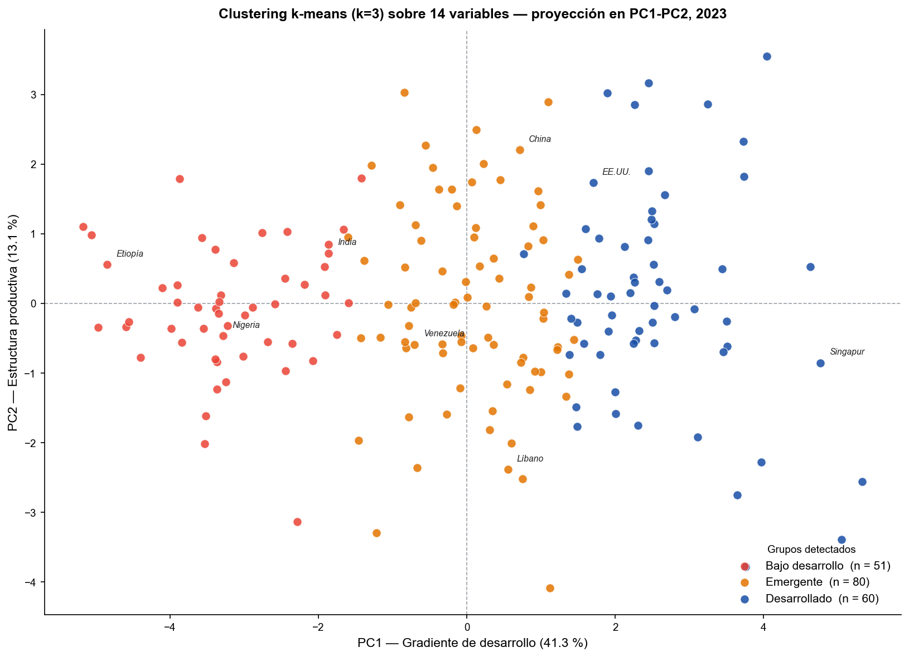
Validación y calidad del clustering
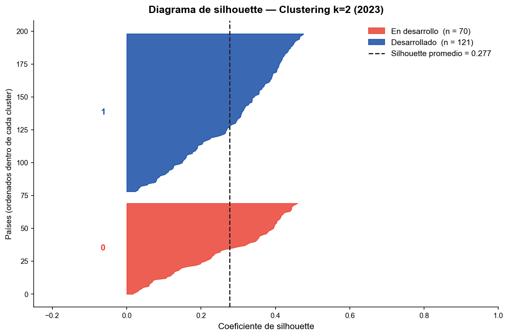
¿Coinciden con la clasificación del Banco Mundial?
| Cluster | Bajo ingreso | Medio-bajo | Medio-alto | Alto ingreso |
|---|---|---|---|---|
| En desarrollo (0) | 31 | 37 | 24 | 7 |
| Desarrollado (1) | 0 | 7 | 24 | 61 |
χ² = 135,8 (p ≈ 2×10⁻²⁸) — asociación altamente significativa. Coincidencia parcial con excepciones informativas: Vietnam, Marruecos y Túnez aparecen en el grupo «desarrollado» pese a tener ingreso medio-bajo; Indonesia y Fiji están en «en desarrollo» pese a ser ingreso medio-alto.
Evolución temporal 2005 → 2023
¿Cómo se movieron los países?
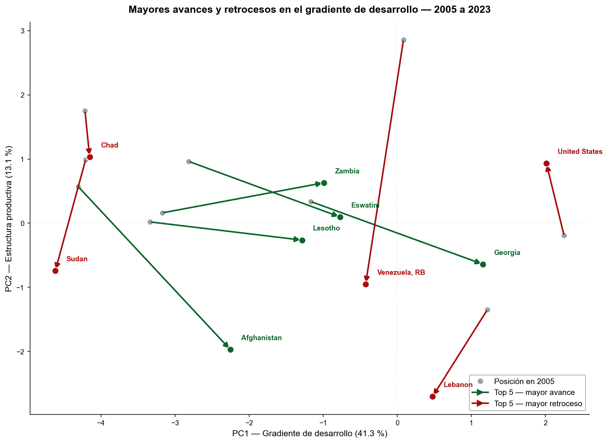
Qué observar: los retrocesos más marcados (Líbano, Venezuela, Sudán) tienen causas documentadas: crisis financiera, colapso económico y conflicto armado. Entre los mayores avances destacan Georgia, Zambia y países del sudeste africano con fuertes mejoras en conectividad y salud.
Flujo entre grupos — diagrama de Sankey
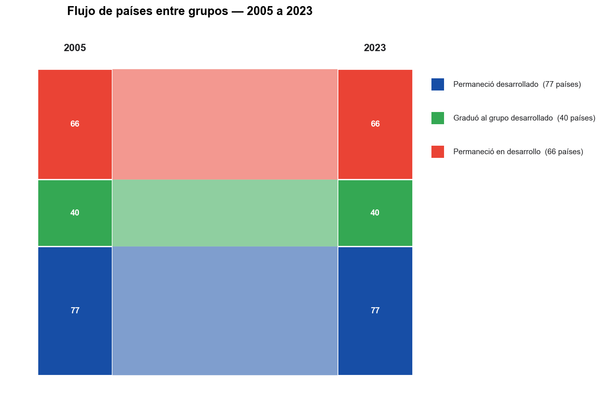
La banda de transición inversa (de desarrollado a en desarrollo) tiene ancho cero: ningún país retrocedió de grupo en este período. La congruencia de Tucker entre las cargas de PC1 en 2005 y 2023 es 0,962 — confirma que el gradiente de desarrollo es el mismo eje 18 años después.
Distribución por grupo — gráfico de waffle
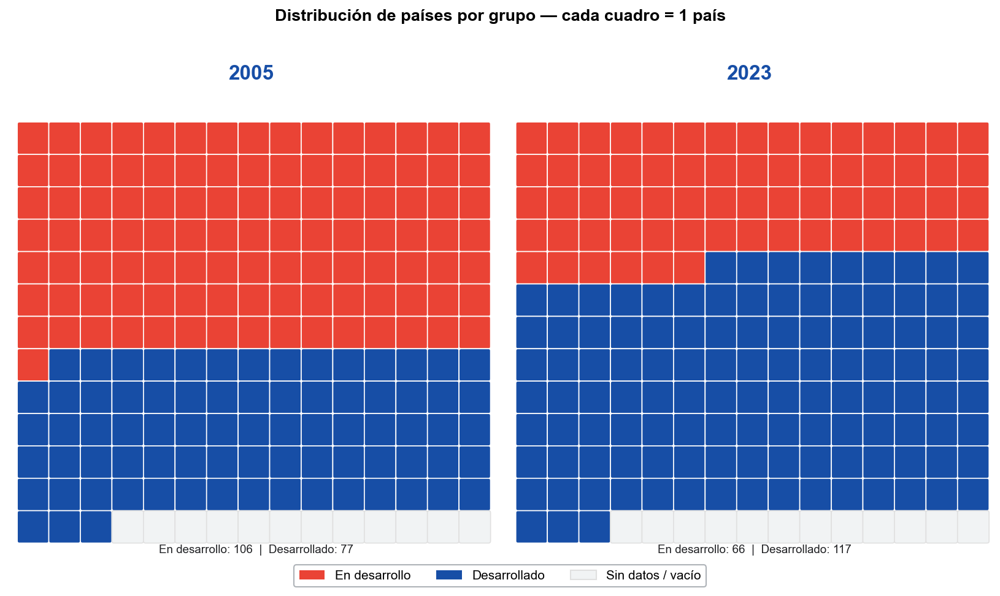
¿Qué impulsó el avance?
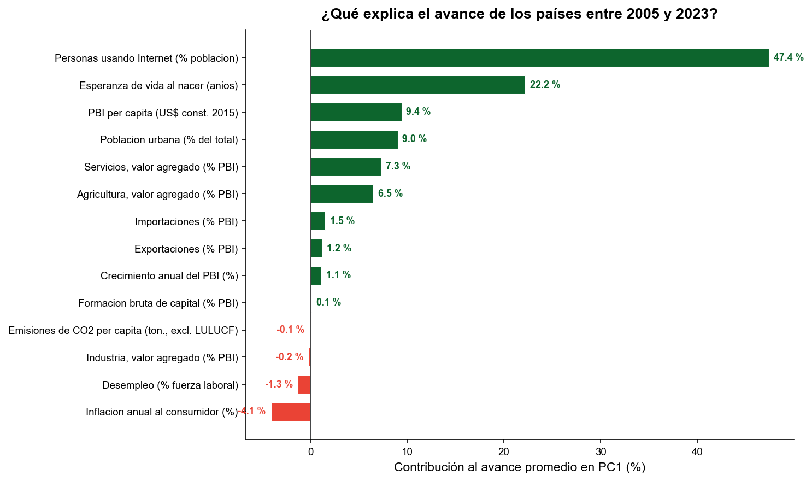
El avance fue liderado por conectividad (47 %) y salud (22 %), no por el PBI (9 %). Esto no es un artefacto inflacionario: el PBI per cápita usado es en dólares constantes de 2015 (serie real). El progreso reflejado en PC1 mide desarrollo genuino: masificación del acceso a tecnología y mejoras en salud pública de alcance global.
Conclusiones
-
El desarrollo se organiza como un gradiente unidimensional. Una sola dimensión —PC1, el «gradiente de desarrollo»— explica el 41 % de la varianza entre 191 países. Esta dimensión integra ingreso, salud, conectividad y estructura económica en un único eje. El análisis paralelo de Horn confirma que la señal es real y no un artefacto del ruido.
-
Dos grupos robustos y replicables. K-means identifica dos clusters con alta estabilidad bootstrap (Jaccard > 0,94), confirmada por el Gap Statistic y tres métricas internas independientes. Los grupos coinciden en gran medida con la clasificación del Banco Mundial, pero con excepciones instructivas que señalan países «por encima» o «por debajo» de lo esperado para su nivel de ingreso.
-
Progreso generalizado impulsado por salud y tecnología. Entre 2005 y 2023, casi todos los países avanzaron en PC1. El motor principal fue Internet (47 %) y la esperanza de vida (22 %), no el PBI (9 %). Esto sugiere que el desarrollo humano y tecnológico se expandió con mayor alcance y equidad que el crecimiento económico puro.
-
El avance no es universal ni irreversible. 40 países cruzaron la frontera hacia el grupo más desarrollado; ninguno retrocedió en términos de cluster. Sin embargo, Líbano, Venezuela y Sudán retrocedieron sustancialmente en PC1, evidenciando que el progreso puede revertirse bajo crisis políticas, económicas o humanitarias severas.
Metodología reproducible
El pipeline completo se reproduce ejecutando python src/run_all.py.
Todas las decisiones están documentadas en reports/decisiones_metodologicas.md.
Figuras mejoradas
Las visualizaciones de esta presentación se generan con
python Benja/figures_mejoradas.py. El notebook interactivo está en
Benja/presentacion_mejoras.ipynb.
Fuente de datos
World Development Indicators, Banco Mundial (WDI, source = 2). Snapshot fijo descargado vía API REST — reproducible aunque la API cambie.
Robustez verificada
Los resultados son prácticamente idénticos con MICE (ARI = 0,979), casos completos (0,972), distintas cantidades de componentes PCA (0,94–1,00) y excluyendo los 10 mayores outliers (0,934).